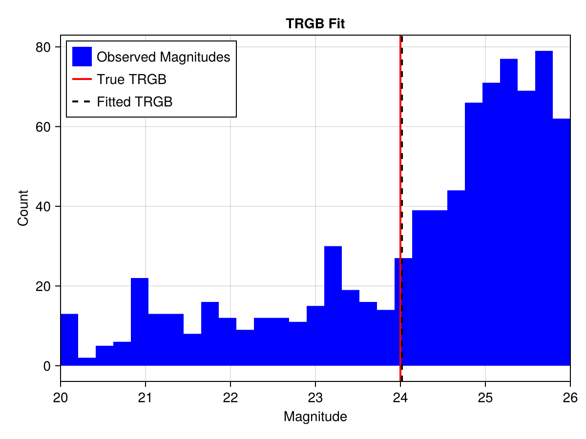
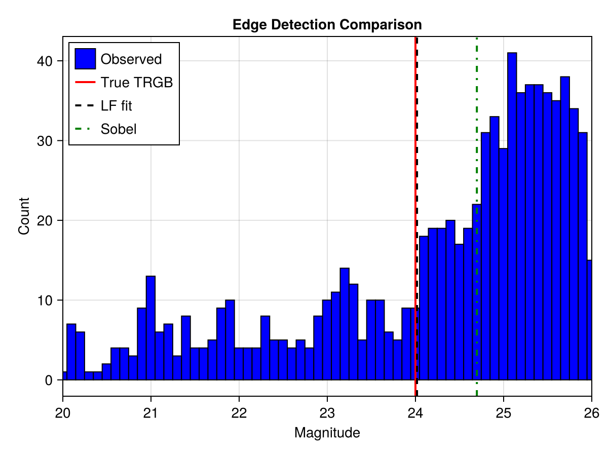
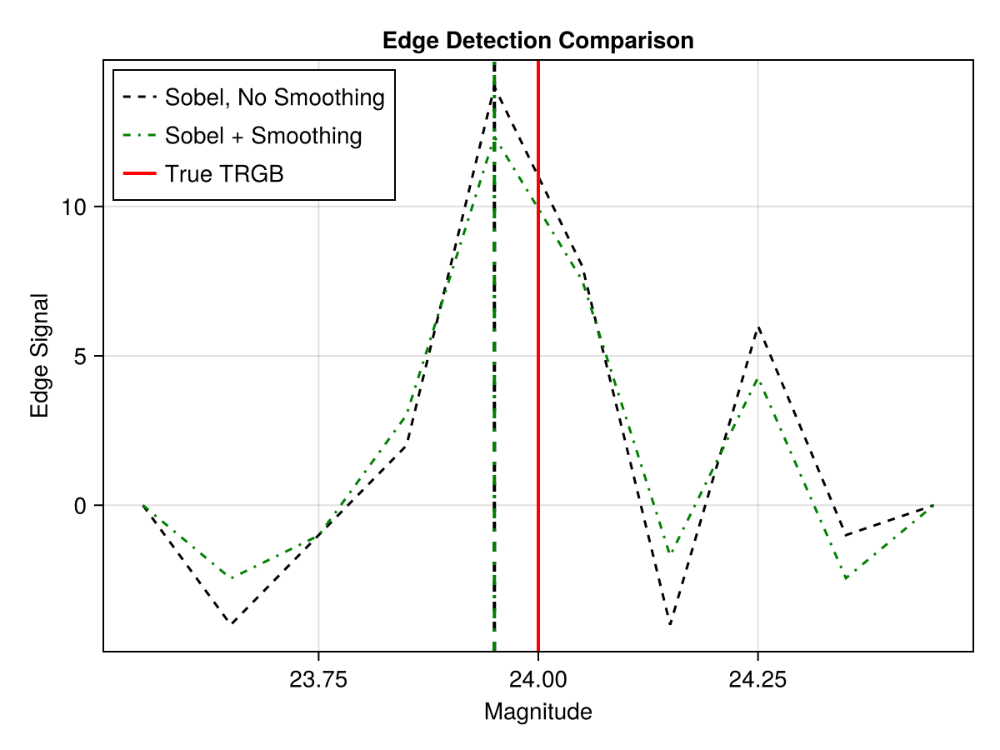
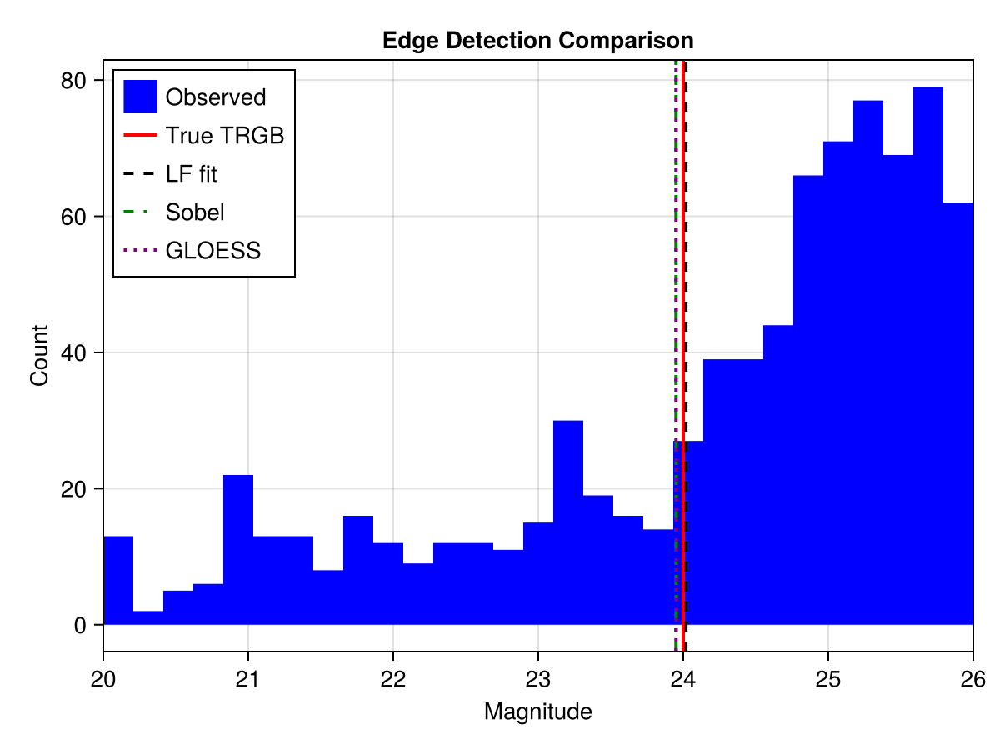

Getting Started
Installation
using Pkg
Pkg.add(url="https://github.com/cgarling/TRGBDistances.jl")Quick Start: Fitting a TRGB Magnitude
using TRGBDistances
using Optim # loads the OptimJL backend extension
using StableRNGs: StableRNG # For repeatability
rng = StableRNG(1)
# 1. Define photometric calibration functions
# here we use empirical models, but typically
# these would be derived from artificial star tests
err_func(m) = TRGBDistances.exp_photerr(m, 1.05, 10.0, 32.0, 0.01)
complete_func(m) = TRGBDistances.Martin2016_complete(m, 1.0, 26.0, 0.3)
bias_func(m) = 0.0 # photometric bias (measured - input), leave 0
# 2. Load your dereddened stellar magnitudes (I-band or equivalent)
# mags = [...] # Vector{Float64} of apparent magnitudes
# 3. Generate synthetic data for this example;
# 1000 stars within 2 mags of the TRGB
m_trgb = 24.0
model_true = BrokenPowerLaw(m_trgb, 0.3, 0.2, 0.1)
mags = observe(rng, model_true, 1000;
err_func, complete_func, bias_func, upper_limit=2.0)
# 4. Set initial guess for parameters [m_trgb, a, b, c]
x0 = [m_trgb + 0.2, 0.3, 0.2, 0.1]
# 5. Fit by MLE
result = TRGBDistances.fit(BrokenPowerLaw, mags, err_func, complete_func, bias_func, x0)
println("TRGB magnitude: ", result.minimizer[1])
println("Converged: ", result.converged)TRGB magnitude: 24.017704374475542
Converged: trueNow we'll plot the histogram of the data with the true TRGB and best-fit solution:
using CairoMakie
hist_bins = range(m_trgb - 4, m_trgb + 2; length=30)
fig = Figure()
ax = Axis(fig[1, 1], xlabel = "Magnitude", ylabel = "Count",
title = "TRGB Fit", limits = (extrema(hist_bins)..., nothing, nothing))
# Histogram of magnitudes
hist!(ax, mags; color = :blue, label = "Observed Magnitudes", bins = hist_bins)
# True TRGB
vlines!(ax, [model_true.m_trgb]; color = :red, linestyle = :solid,
linewidth = 2, label = "True TRGB")
# Fitted TRGB
vlines!(ax, [result.minimizer[1]]; color = :black, linestyle = :dash,
linewidth = 2, label = "Fitted TRGB")
axislegend(ax, position = :lt)
fig
MAP Estimation with a Prior on m_TRGB
using Distributions
# Gaussian prior on m_trgb based on a distance estimate from another method
prior = (Normal(24.0, 0.3), nothing, nothing, nothing)
result_map = TRGBDistances.fit(BrokenPowerLaw, mags, err_func, complete_func, bias_func, x0;
prior=prior)TRGBFitResult(minimizer=[24.01756122488428, 0.24321976918848742, 0.27423651933653276, 0.09660563135974665], minimum=2144.161247471505, converged=true)Fitting with Different Optim Methods
using Optim
using ADTypes
using ForwardDiff
# Optimizing with BFGS; quasi-Newton, first order
result_bfgs = TRGBDistances.fit(BrokenPowerLaw, mags, err_func, complete_func, bias_func, x0;
prior=prior, backend=OptimJL(method=Optim.BFGS(), ad=ADTypes.AutoForwardDiff()))
# Optimizing with Newton; second order
result_newton = TRGBDistances.fit(BrokenPowerLaw, mags, err_func, complete_func, bias_func, x0;
prior=prior, backend=OptimJL(method=Optim.Newton(), ad=ADTypes.AutoForwardDiff()))
# Optimizing with NewtonTrustRegion; second order
result_ntr = TRGBDistances.fit(BrokenPowerLaw, mags, err_func, complete_func, bias_func, x0;
prior=prior, backend=OptimJL(method=Optim.NewtonTrustRegion(), ad=ADTypes.AutoForwardDiff()))
println("BFGS TRGB magnitude: ", result_bfgs.minimizer[1])
println("Newton TRGB magnitude: ", result_newton.minimizer[1])
println("NewtonTrustRegion TRGB magnitude: ", result_ntr.minimizer[1])BFGS TRGB magnitude: 24.017561525129473
Newton TRGB magnitude: 24.017561525134045
NewtonTrustRegion TRGB magnitude: 24.01756151707344Choosing an Optimization Method
On well-constrained problems, BFGS, Newton, and NewtonTrustRegion should reach the same answer. Gradients and Hessians are obtained via automatic differentiation; the above examples use ForwardDiff.jl by specifying the ad=ADTypes.AutoForwardDiff() keyword argument. The second-order methods can often be faster than the first-order methods; we typically recommend Optim.NewtonTrustRegion.
Posterior Sampling
KissMCMC.jl provides a multi-threaded implementation of the Goodman–Weare affine-invariant ensemble sampler (the same algorithm as emcee in Python). It is simple, lightweight, and performant – for low dimensional TRGB fits (there are only four free parameters in the broken power law luminosity function model) this algorithm is able to achieve good sampling efficiency.
using KissMCMC # loads the KissMCMC backend extension
chain = TRGBDistances.sample(BrokenPowerLaw, mags, err_func, complete_func, bias_func, x0;
prior=prior, use_progress_meter=false,
backend=KissMCMCJL(nsamples=2_000, nburnin=200))
println("Acceptance fraction: ", chain.acceptance_fraction)
println("Posterior mean and std (m_trgb): ", mean(chain.samples[1, :]), " ± ", std(chain.samples[1, :]))Acceptance fraction: 0.587
Posterior mean and std (m_trgb): 24.045853531610387 ± 0.07848250611948246Posterior Sampling with AdvancedMH.jl
AdvancedMH.jl provides a random-walk Metropolis-Hastings sampler. The proposal_scale keyword controls the standard deviation of the isotropic Gaussian proposal; it should be set to roughly the marginal posterior standard deviation of the parameters (a few percent of a magnitude is a good first guess for m_trgb).
using AdvancedMH
chain_amh = TRGBDistances.sample(BrokenPowerLaw, mags, err_func, complete_func, bias_func, x0;
prior=prior, rng=StableRNG(2),
backend=AdvancedMHJL(nsamples=1_000, nburnin=100, proposal_scale=0.01))
println("Acceptance fraction: ", round(chain_amh.acceptance_fraction; digits=3))
println("Posterior mean and std (m_trgb): ",
round(mean(chain_amh.samples[1, :]); digits=4), " ± ",
round(std(chain_amh.samples[1, :]); digits=4))Acceptance fraction: 0.375
Posterior mean and std (m_trgb): 24.0251 ± 0.0416Posterior Sampling with AffineInvariantMCMC.jl
AffineInvariantMCMC.jl implements the Goodman–Weare affine-invariant ensemble sampler (the same algorithm as emcee in Python). Like KissMCMC's emcee backend, it maintains a population of walkers that collectively explore the posterior; it performs well on correlated, anisotropic posteriors without requiring any tuning of a proposal covariance. This package does not support threading while KissMCMC does, making it slower when multiple threads are available.
using AffineInvariantMCMC
chain_ai = TRGBDistances.sample(BrokenPowerLaw, mags, err_func, complete_func, bias_func, x0;
prior=prior, rng=StableRNG(3),
backend=AffineInvariantMCMCJL(nsamples=1_000, nburnin=100, nwalkers=4))
println("Acceptance fraction: ", round(chain_ai.acceptance_fraction; digits=3))
println("Posterior mean and std (m_trgb): ",
round(mean(chain_ai.samples[1, :]); digits=4), " ± ",
round(std(chain_ai.samples[1, :]); digits=4))
Progress: 5%|██▎ | ETA: 0:01:29
Progress: 12%|█████ | ETA: 0:01:17
Progress: 19%|███████▊ | ETA: 0:01:08
Progress: 25%|██████████▍ | ETA: 0:01:01
Progress: 32%|█████████████▏ | ETA: 0:00:55
Progress: 39%|███████████████▊ | ETA: 0:00:49
Progress: 45%|██████████████████▌ | ETA: 0:00:44
Progress: 52%|█████████████████████▏ | ETA: 0:00:38
Progress: 58%|███████████████████████▉ | ETA: 0:00:33
Progress: 65%|██████████████████████████▌ | ETA: 0:00:28
Progress: 71%|█████████████████████████████▎ | ETA: 0:00:23
Progress: 78%|███████████████████████████████▉ | ETA: 0:00:17
Progress: 84%|██████████████████████████████████▋ | ETA: 0:00:12
Progress: 91%|█████████████████████████████████████▎ | ETA: 0:00:07
Progress: 97%|████████████████████████████████████████ | ETA: 0:00:02
Progress: 100%|█████████████████████████████████████████| Time: 0:01:18
Acceptance fraction: 0.587
Posterior mean and std (m_trgb): 24.0049 ± 0.0665Posterior Sampling with DynamicHMC
DynamicHMC.jl uses a Hamiltonian Monte Carlo algorithm and is slower than basic MCMC methods (such as are implemented by KissMCMC.jl) for a fixed number of samples. As currently implemented, each likelihood evaluation involves a numerical convolution integral, and HMC requires many gradient evaluations per sample; for BrokenPowerLaw with only four free parameters, basic MCMC algorithms such as KissMCMC or AdvancedMH are likely to be more efficient. HMC may become comparatively more efficient for higher-dimensional problems.
using DynamicHMC
chain = TRGBDistances.sample(BrokenPowerLaw, mags, err_func, complete_func, bias_func, x0;
prior=prior, rng=rng,
backend=DynamicHMCJL(nsamples=200, n_warmup=100, ad=AutoForwardDiff()))Edge Detection with the Sobel Filter
Edge-detection methods provide a fast, non-parametric TRGB estimate that does not require specifying a luminosity-function model. However, these methods can be "tricked" as we will see below. The Sobel filter [1] detects the sharpest step in the magnitude histogram.
# Pure Sobel (no pre-smoothing) — fast, appropriate when errors ≪ bin_width
result_sobel = trgb(Sobel(bin_width=0.1), mags)
println("Sobel TRGB: ", round(result_sobel.m_trgb; digits=3))Sobel TRGB: 24.697You will note that this is not the correct answer; the Sobel filter has found the the sharpest step in the histogram, but in this random sample, that step is not the TRGB.
fig2 = Figure()
ax2 = Axis(fig2[1, 1], xlabel = "Magnitude", ylabel = "Count",
title = "Edge Detection Comparison",
limits = (extrema(hist_bins)..., nothing, nothing))
# Support for Makie.barplot(::SobelResult) is defined in
# TRGBDistancesMakieExt, plotting the internal histogram
barplot!(ax2, result_sobel; color = :blue, label = "Observed", gap = 0, strokecolor = :black, strokewidth = 1)
vlines!(ax2, [model_true.m_trgb]; color = :red, linestyle = :solid, linewidth = 2, label = "True TRGB")
vlines!(ax2, [result.minimizer[1]]; color = :black, linestyle = :dash, linewidth = 2, label = "LF fit")
vlines!(ax2, [result_sobel.m_trgb]; color = :green, linestyle = :dashdot, linewidth = 2, label = "Sobel")
axislegend(ax2, position = :lt)
fig2
To prevent such misidentifications, Sobel takes a magnitude_range keyword argument that can be used to restrict the range of magnitudes it searches, ensuring it finds the right feature:
# Pure Sobel (no pre-smoothing) — fast, appropriate when errors ≪ bin_width
result_sobel = trgb(Sobel(bin_width=0.1, magnitude_range=(23.5, 24.5)), mags)
println("Sobel TRGB: ", round(result_sobel.m_trgb; digits=3))Sobel TRGB: 23.95Passing a response distribution convolves the histogram with the distribution PDF before applying the Sobel kernel, acting as a matched filter for photometric-error smearing [5]:
using Distributions
# Pre-smooth with a Gaussian matching the typical photometric error near the TRGB
result_sobel_smooth = trgb(Sobel(bin_width=0.1, magnitude_range=(23.5,24.5),
response=Normal(0, 0.05)),
mags)
println("Sobel (Gaussian pre-smooth) TRGB: ", round(result_sobel_smooth.m_trgb; digits=3))Sobel (Gaussian pre-smooth) TRGB: 23.95The edge signal is saved in the edge_signal field of the SobelResult type, and can be plotted directly via our Makie extension when using lines or scatter:
fig = Figure()
ax = Axis(fig[1, 1], xlabel = "Magnitude", ylabel = "Edge Signal",
title = "Edge Detection Comparison")
lines!(ax, result_sobel, color = :black, linestyle = :dash, label = "Sobel, No Smoothing")
lines!(ax, result_sobel_smooth, color = :green, linestyle = :dashdot, label = "Sobel + Smoothing")
vlines!(ax, [model_true.m_trgb]; color = :red, linestyle = :solid, linewidth = 2, label = "True TRGB")
vlines!(ax, [result_sobel.m_trgb]; color = :black, linestyle = :dash, linewidth = 2)
vlines!(ax, [result_sobel_smooth.m_trgb]; color = :green, linestyle = :dashdot, linewidth = 2)
axislegend(ax, position = :lt)
fig
Finally, we can use bootstrap to perform bootstrap resampling of the data to obtain a more robust estimate of the TRGB magnitude and an estimate of the uncertainty. Generally all edge detection methods should support bootstrapping with this interface.
sobel_samples = bootstrap(Sobel(bin_width=0.1, magnitude_range=(23.5,24.5),
response=Normal(0, 0.05)), mags; n=1000)
println("Sobel bootstrap estimate: ", round(mean(sobel_samples); digits=3), " ± ", round(std(sobel_samples); digits=3))Sobel bootstrap estimate: 23.998 ± 0.097Edge Detection with GLOESS
The GLOESS algorithm [2] applies Gaussian-windowed locally-weighted smoothing to the histogram before Sobel edge detection [3]. It is more robust than the plain Sobel filter when the histogram is noisy.
result_gloess = trgb(GLOESS(bandwidth=0.2, bin_width=0.1, magnitude_range=(23.5,24.5)), mags)
println("GLOESS TRGB: ", round(result_gloess.m_trgb; digits=3))GLOESS TRGB: 23.95And bootstrap resampling is supported here as well:
gloess_samples = bootstrap(GLOESS(bandwidth=0.2, bin_width=0.1,
magnitude_range=(23.5,24.5)), mags; n=1000)
println("GLOESS bootstrap estimate: ", round(mean(gloess_samples); digits=3), " ± ", round(std(gloess_samples); digits=3))GLOESS bootstrap estimate: 24.005 ± 0.059We can overlay all three estimates on the histogram:
fig2 = Figure()
ax2 = Axis(fig2[1, 1], xlabel = "Magnitude", ylabel = "Count",
title = "Edge Detection Comparison",
limits = (extrema(hist_bins)..., nothing, nothing))
hist!(ax2, mags; color = :blue, label = "Observed", bins = hist_bins)
vlines!(ax2, [model_true.m_trgb]; color = :red, linestyle = :solid, linewidth = 2, label = "True TRGB")
vlines!(ax2, [result.minimizer[1]]; color = :black, linestyle = :dash, linewidth = 2, label = "LF fit")
vlines!(ax2, [result_sobel.m_trgb]; color = :green, linestyle = :dashdot, linewidth = 2, label = "Sobel")
vlines!(ax2, [result_gloess.m_trgb]; color = :purple, linestyle = :dot, linewidth = 2, label = "GLOESS")
axislegend(ax2, position = :lt)
fig2
References
This page cites the following references:
- [1]
- M. G. Lee, W. L. Freedman and B. F. Madore. The Tip of the Red Giant Branch as a Distance Indicator for Resolved Galaxies. ApJ 417, 553–559 (1993).
- [2]
- S. E. Persson, B. F. Madore, K. Kriščiūnas, W. L. Freedman, M. Roth and D. C. Murphy. New Cepheid Period–Luminosity Relations for the Large Magellanic Cloud: 92 Near-Infrared Light Curves. AJ 128, 2239–2264 (2004).
- [3]
- D. Hatt, R. L. Beaton, W. L. Freedman, B. F. Madore, I.-S. Jang, T. J. Hoyt, M. G. Lee, A. J. Monson, J. A. Rich, V. Scowcroft and M. Seibert. The Carnegie-Chicago Hubble Program. II. The Distance to IC 1613: The Tip of the Red Giant Branch and RR Lyrae Period-luminosity Relations. ApJ 845, 146 (2017).
- [5]
- S. Sakai, B. F. Madore and W. L. Freedman. Tip of the Red Giant Branch Distances to Galaxies. III. The Dwarf Galaxy Sextans A. ApJ 461, 713–723 (1996).